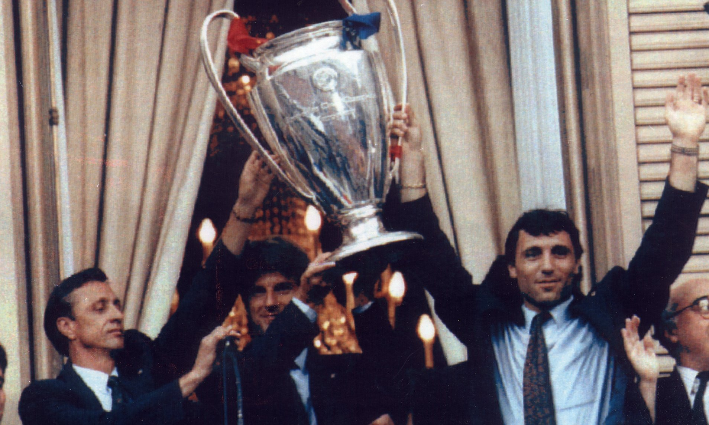
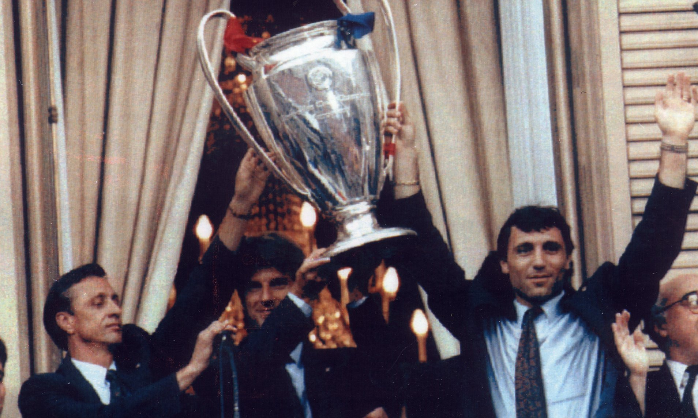

"Més Que Un Club"

Hans Max Gamper-Haessig (born 22 November 1877
died 30 July 1930), commonly known as Joan Gamper, was a Swiss-born
football executive and versatile athlete.
He founded football
clubs in Switzerland and Spain, most notably FC Barcelona and FC
Zürich. He is widely regarded as one of the most important figures
in the amateur beginnings of FC Barcelona, being the fundamental
head behind the foundation of the club in 1899, and then serving as
the club's first captain between 1899 and 1903, netting over 100
goals in just 48 matches for Barça and in 1902, he captained his
side to a victory in the Copa Macaya, the club's very first title.
He then served as its
president on five separate occasions
between 1908 and 1925. One of his main achievements was getting the
funds for the construction of their own stadium in 1909, the Camp de
la Indústria, which is regarded as the main element that helped the
club grow in the 1910s. Under Gamper's leadership, Barcelona won
eleven Championat de Catalunya, six Copa del Rey and four Pyrenees
Cup.
In 1899, Gamper went to Barcelona to visit his uncle who was living
there. He was on his way to Africa to help set up some sugar trading
companies but fell in love with the Catalan city and decided to stay
put. He would later become a fluent Catalan speaker and adopt the
Catalan version of his name: "Joan Gamper". As an accountant, he
found work with Crédit Lyonnais, the Sarrià Railway Company and as a
sports columnist, he worked for two Swiss newspapers. Gamper joined
the local Swiss Evangelical Church and began playing football within
the local Christian Protestant community in the district of
Sarrià-Sant Gervasi. During his free time, he also played football
with a group of friends at the Velódromo de la Bonanova. When
Gamper, who had already founded clubs in his home country, decided
to do the same in his new city, he contacted Jaime Vila, the
director of the Tolosa gym, which at the time was the home to a
group of football enthusiasts that was also practicing the sport in
Bonanova. He proposed to him the idea of creating a well-organized
football club, but Vila rejected him as he did not want foreigners
in its ranks and ended up founding Català FC in October 1899. This
did not discourage him, however, with Gamper now aiming to create an
organization that was open to everyone, regardless of their origin.
He envisaged a club that served as a means of social integration, in
which everyone could speak their mind, and create a democratic
society that was freely governed by its members. Immediately
afterwards, he and his friend Walter Wild arrived at the Gimnasio
Solé. There they were well received by Narciso Masferrer, who had
the headquarters of his numerous associations and of the Los
Deportes newsroom in the said gym, and they did not take long to
publish Gamper's infamous advert declaring his wish to form a
football club, published on 22 October 1899. A positive response
resulted in a meeting at the Gimnasio Solé on 29 November and
"Futbol Club Barcelona" was born. The founders included a collection
of Swiss, British, and Spanish enthusiasts. It is not known if
Gamper chose the legendary club colours, blaugrana, after FC Basel
or Excelsior Zürich, although the official version states that
brothers Arthur and Ernest Witty (both very involved with the club
in its first years) proposed the blaugrana colors, the same used by
the rugby team of Merchant Taylors' School in Great Crosby (which
they had attended).
 

Hendrik Johannes Cruijff, internationally known as
Johan Cruyff (born:25 April 1947, died: 24 March 2016) was a Dutch
professional football player and manager. Regarded as one of the
greatest players of all time, and as the greatest Dutch footballer
ever, he won the Ballon d'Or three times, in 1971, 1973, and 1974.
In the 1970s, Dutch football rose from near obscurity to become a
powerhouse in the sport. Cruyff led the Netherlands to the final of
the 1974 FIFA World Cup and received the Golden Ball as player of
the tournament. At the 1974 finals, he executed a feint that
subsequently was named after him, the "Cruyff Turn", a move widely
replicated in the modern game. He was a football visionary whose
impact on FC Barcelona & Ajax Amsterdam as both a player and coach
revolutionized the club's style of play and left an enduring legacy
in the annals of football history.
Cruyff made a momentous move to Barcelona from Ajax Amsterdam,
setting the stage for a historic chapter in the Catalan club's
history. The Dutch maestro quickly became a darling of the Camp Nou
faithful, mesmerizing fans with his exceptional skills, breathtaking
dribbling, and unparalleled vision on the pitch. Cruyff's ability to
read the game and execute precise passes made him a dynamic
playmaker, orchestrating Barcelona's attacking moves with unrivaled
finesse. During his first three seasons with Barcelona, Cruyff led
the team to secure a La Liga title and Copa del Rey triumph,
showcasing his immense influence on the pitch. He was not only a
prolific goal-scorer but also an architect of intricate team play,
elevating the entire squad's performance. Cruyff's revolutionary
concept, known as "Total Football," which he learned at Ajax under
Rinus Michels, started to shape Barcelona's identity. The philosophy
involved fluid positioning, intelligent interchange of positions,
and a strong emphasis on possession-based attacking football. Under
Cruyff's guidance, Barcelona transformed into a force to be reckoned
with, and his impact on the club's ethos would continue long after
his playing days.
Following his illustrious playing career, Cruyff returned to
Barcelona in 1988, this time as the head coach, and embarked on a
remarkable journey that would forever alter the footballing
landscape in Catalonia. Embracing the principles of Total Football,
Cruyff instilled a strong sense of tactical discipline and
creativity within the team. The 1988-89 season was historic for
Barcelona as they secured a La Liga title after an intense title
race with Real Madrid. But it was in the early '90s when Cruyff's
"Dream Team" reached its peak. Led by the mesmerizing skills of
players like Romário, Ronald Koeman, and Pep Guardiola, Barcelona
achieved unprecedented success both domestically and
internationally. In the 1991-92 season, Cruyff guided Barcelona to
their first-ever European Cup triumph, beating Sampdoria in the
final 1-0. This victory cemented Barcelona's status as a European
football powerhouse and validated Cruyff's tactical genius.
Moreover, Cruyff's influence extended beyond the playing field. He
played a crucial role in revitalizing Barcelona's youth academy, La
Masia, emphasizing the development of young talents and instilling a
footballing philosophy that would become synonymous with the club.
Legacy Johan Cruyff's impact on Barcelona extended far beyond
trophies and titles. His influence was cultural, transforming the
way football was perceived and played. The style he cultivated at
Barcelona would become part of the club's DNA, influencing future
generations of players and coaches. Cruyff's spirit continues to be
honored through the annual presentation of the "Johan Cruyff
Trophy," awarded to the best player in the Dutch Eredivisie. Sadly,
on March 24, 2016, football lost one of its greatest luminaries when
Johan Cruyff passed away. However, his legacy remains alive and
well, as his footballing philosophy and principles continue to
inspire clubs and coaches worldwide, perpetuating the lasting impact
of the maestro's genius.
Franklin Edmundo Rijkaard (born 30 September 1962)
is a Dutch former footballer and former manager who played as a
defensive midfielder. Rijkaard played for Ajax, Real Zaragoza, and
AC Milan and represented the Netherlands national team side 73
times, scoring 10 goals. In his managerial career, he was at the
helm of the Netherlands national team, Sparta Rotterdam, Barcelona,
Galatasaray, and the Saudi Arabia national team. He was regarded as
one of the best midfielders in football history.
Rijkaard's coaching career began when he was appointed manager of
the Netherlands national team in 1998. He had previously served as
an assistant coach, along with Johan Neeskens and Ronald Koeman
under the managerial tenure of Guus Hiddink. At the time, he was not
taken seriously as a manager because of his inexperience, but he was
able to guide his national side to the semi-finals of Euro 2000.
During the group phase, the Dutch team won slowly but surely and
managed to get three victories: 1–0 against the Czech Republic, 3–0
against Denmark and 3–2 against France. In the quarter-final, his
side produced the biggest win of the competition, a 6–1 result
against Yugoslavia. The Netherlands played some of the best football
of the tournament, but lost their semi-final match to Italy on
penalties; Rijkaard resigned immediately. During the 2001–02 season,
he became manager of Sparta Rotterdam in the Eredivisie, the oldest
professional team in the country. Rijkaard enjoyed the down-to-earth
atmosphere, although the club was not financially strong. Under his
leadership, the club was relegated to the second division for the
first time in its history, and he was consequently sacked.
Rijkaard was not out of a coaching role for long, and less than a
year after leaving Sparta, he was appointed manager of Barcelona for
the 2003–04 season, with Albert Roca as the assistant coach. The
season would prove to be a watershed for the club, but not without
initial instability. Rijkaard arrived at the club as it entered a
new phase, having elected a new president in Joan Laporta and a new
managerial board, but with fans unhappy that Laporta had let English
midfielder David Beckham snub the chance to join the club. For
Rijkaard, the team he inherited, with the exception of new superstar
signing Ronaldinho (who was the club's second choice after Beckham),
also consisted of many underachieving players from the old guard and
era that failed to meet the club and its fans' demands to match
archrival Real Madrid's success in the early 2000s, having not won a
trophy since 1999. Rijkaard had a disappointing start at Barcelona
that saw some sections of the club's fans call for his resignation,
and he drew flak from the media when the team lost to Real Madrid in
December 2003. Rijkaard's resilience won through and from 2004
onwards, he achieved a massive turnaround, as the team went from
strength to strength. Barcelona finished runners-up in La Liga in
2003–04, having been close to the relegation zone at one point in
the earlier stages of the season. Rijkaard then took Barcelona to
the next level as he phased out the old guard and rebuilt a new-look
side around Ronaldinho, with new players like Deco, Samuel Eto'o,
Rafael Márquez and Ludovic Giuly, along with the latest promotion of
some young players from the previous era trained in the club's youth
teams, including Víctor Valdés, Lionel Messi and Andrés Iniesta. He
eventually succeeded in turning around the fortunes of the club,
with the strong support of Laporta, and within the next couple of
years finally managed to win La Liga both in 2004–05 and in 2005–06.
Rijkaard became the first Barcelona coach to have won twice at Real
Madrid's Santiago Bernabéu Stadium, an achievement which even
successful managers like Johan Cruyff, Louis van Gaal and Luis
Aragonés were unable to accomplish. His no-nonsense policy on and
off the field, and the sparkling football played by his team, won
him many plaudits and Rijkaard was among the five nominated coaches
for UEFA's Team of the Year 2005. On 8 March 2006, he was also
honoured by UEFA for his contributions to the European Cup
competition throughout his career as player and manager. Rijkaard
also achieved success on the European stage, winning the 2005–06
Champions League with a 2–1 win against Arsenal in the final.
Barcelona had been losing 1–0 for most of the match before his late
tactical substitutions proved the decisive factor, as the
introduction of Henrik Larsson and Juliano Belletti contributed
directly to Barcelona's two goals. The win made him the fifth
individual to have won the European Cup both as a player and as a
manager, alongside Miguel Muñoz, Giovanni Trapattoni, Johan Cruyff
and Carlo Ancelotti, a feat later achieved also by his eventual
successor, Pep Guardiola and then Zinedine Zidane.
After losing to Manchester United in the semi-final of the 2007–08
Champions League, Rijkaard was asked whether he would quit at the
end of the season, since he had not won anything for two successive
seasons. He replied, "I have no intention of leaving. It would be
different if the players were saying it is time for me to go but
that is not the case." On 1 May 2008, it was reported that Rijkaard
allegedly confided to a colleague that he would be stepping down as
Barcelona manager at the end of the season, but 24 hours later, he
stated in a press conference that he had no intention of leaving the
club. On 8 May 2008, the day after Barcelona's dismal 4–1 defeat to
archrivals Real Madrid, Barcelona president Joan Laporta announced
that at the end of the 2007–08 season, Rijkaard would no longer be
head coach of the first team. Laporta made the announcement after a
board meeting, and Rijkaard was succeeded by Pep Guardiola. Laporta
made it clear that Rijkaard's achievements "made history" and
praised him for his time at the club.
Ronaldo de Assis Moreira (born 21 March 1980),
commonly known as Ronaldinho Gaúcho, born in 1980, is a retired
Brazilian footballer celebrated for his exceptional skills and
versatility on the field. He is widely considered one of the
greatest players in history, winning two FIFA World Player of the
Year awards and a Ballon d'Or. His unique style included dazzling
dribbles, precise free-kicks, imaginative passes, and remarkable
goals, influenced by his futsal background.
Ronaldinho achieved a rare feat of winning major titles like the
World Cup, Copa América, Confederations Cup, Champions League, Copa
Libertadores, and Ballon d'Or. In 2003, Ronaldinho joined FC
Barcelona, chosen over other prominent players, marking the
beginning of his peak years. He made a memorable debut, showcasing
his extraordinary abilities. Despite early injury setbacks, he
contributed significantly with 15 La Liga goals in the 2003–04
season, aiding Barcelona's second-place finish. Ronaldinho's iconic
no-look pass set the stage for a pivotal win against Real Madrid, a
turning point in the team's resurgence.
The subsequent 2004–05 season saw Ronaldinho clinching his first
league title and being named FIFA World Player of the Year. His
captivating performances in La Liga and the UEFA Champions League
captured global attention. While Barcelona was eliminated from the
Champions League by Chelsea, Ronaldinho's sublime goals left a
lasting impression, especially a memorable strike against Chelsea.
Ronaldinho's impact continued with key contributions to his team's
successes.
He garnered numerous awards in 2005, solidifying his status as the
world's best player. Notably, he secured his only Ballon d'Or title.
His exceptional skills were acknowledged even by rival fans, as seen
when Real Madrid supporters applauded his performance during El
Clásico.
Ronaldinho played a pivotal role in Barcelona's Champions League
triumph in 2006, scoring crucial goals in the knockout stages and
assisting in the final. This achievement was complemented by
securing La Liga again, marking his first career double.
Teaming up with striker Samuel Eto'o, Ronaldinho's assists and
goals bolstered Barcelona's dominance. He finished the season with
26 goals and received accolades like UEFA Team of the Year and UEFA
Club Footballer of the Year. He was also shortlisted for the Laureus
World Sportsman of the Year and included in the FIFA World XI.
Ronaldinho's career was characterized by his extraordinary skill
set, significant contributions to Barcelona's success, and global
recognition as a footballing wizard.
Josep "Pep" Guardiola Sala (born 18 January 1971)
is a Spanish professional football manager and former player.
Currently managing Premier League club Manchester City, Guardiola is
the only manager to win the continental treble twice, the youngest
to win the UEFA Champions League, and he also holds the records for
the most consecutive league games won in La Liga, the Bundesliga,
and the Premier League. He is considered to be one of the greatest
managers of all time.
Guardiola was a defensive midfielder who usually played in a
deep-lying playmaker's role. He spent the majority of his career
with Barcelona, forming a part of Johan Cruyff's Dream Team that won
the club's first European Cup in 1992, and four successive Spanish
league titles from 1991 to 1994. He captained the team from 1997
until his departure from Barcelona in 2001. Guardiola then had
stints with Brescia and Roma in Italy, Al-Ahli in Qatar and Dorados
de Sinaloa in Mexico. He was capped 47 times for the Spanish
national team and appeared at the 1994 FIFA World Cup, as well as at
UEFA Euro 2000. He also played friendly matches for Catalonia. After
retiring as a player, Guardiola briefly managed Barcelona B, with
whom he won a Tercera División title. He took charge of the first
team in 2008. In his first season, he led Barcelona to the
continental treble of La Liga, the Copa del Rey and the UEFA
Champions League, becoming the youngest manager to win the latter
competition. He was named the FIFA World Coach of the Year in 2011
after leading the club to another La Liga and Champions League
double in the 2010–11 season. Guardiola ended his four-year
Barcelona stint in 2012 with 14 honours, a club record.
Guardiola was appointed manager of Barcelona B on 21 June 2007 with
Tito Vilanova as his assistant. Under his guidance, the team
subsequently won their Tercera División group and qualified for the
2008 Segunda División B playoffs, which the team won, thereby
achieving promotion. FC Barcelona President Joan Laporta announced
in May 2008 that Guardiola would be appointed manager of the senior
Barcelona squad to replace Frank Rijkaard at the end of the 2007–08
season.
Upon being appointed, Guardiola said that Ronaldinho, Deco, Samuel
Eto'o and others were not part of his plans for the coming season.
By the time of the announcement, he had already offloaded full back
Gianluca Zambrotta to Milan, attacking midfielder Giovani dos Santos
to Tottenham Hotspur and midfielder Edmílson to Villarreal. Deco
went to Chelsea while Ronaldinho joined Zambrotta in Milan. Lilian
Thuram was initially set to join Paris Saint-Germain on a free
transfer, but the discovery of a heart condition put a stop to the
move, and the veteran retired to tend to his health. Oleguer signed
with Ajax, Santiago Ezquerro was released by Barcelona and Marc
Crosas was sold to Celtic. The fate of Eto'o took much of the summer
to unravel, with the Cameroonian linked with several clubs, but
Guardiola finally declared that he would stay after his dedication
in training and participation in the pre-season.
In association with Barcelona Director of Sport Txiki Begiristain,
several new signings were made by Guardiola – Dani Alves and Seydou
Keita arrived from Sevilla; Martín Cáceres from Villarreal by way of
Recreativo de Huelva; Gerard Piqué returned from Manchester United;
and Alexander Hleb was signed from Arsenal. Henrique was also signed
from Palmeiras, but was immediately loaned out to Bayer Leverkusen.
In interviews with the press, Guardiola stressed a harder work ethic
than before, but also a more personal approach during training and a
closer relationship with his players. Along with the new signings,
Guardiola promoted canteranos Sergio Busquets, Pedro and Jeffrén to
the first-team squad.
Guardiola's first competitive game as manager was in the third
qualifying round of the Champions League, in which Barcelona
comfortably beat Polish club Wisła Kraków 4–0 in the first leg at
home. They then lost 1–0 in the second leg, but progressed with a
4–1 aggregate victory. Promoted Numancia also defeated Barcelona in
the opening matchday of the 2008–09 La Liga, but the team then went
on an undefeated streak for over 20 matches to move to the top of
the league. Barcelona maintained their spot atop La Liga's table,
securing their first league title since 2006 when rivals Real Madrid
lost at Villarreal on 16 May 2009. The most important match,
however, was on 2 May when they defeated Real Madrid 6–2 at the
Santiago Bernabéu Stadium. The league title was the second piece of
silverware in Guardiola's first season at the club. Earlier, on 13
May, Barcelona won the 2008–09 Copa del Rey, beating Athletic Bilbao
4–1 in the 2009 Copa del Rey final.
In the Champions League semi-final against Chelsea, a late Andrés
Iniesta goal in the second leg at Stamford Bridge put Barcelona
through, with an ecstatic Guardiola celebrating the goal by
sprinting down the touchline near to where his players were
celebrating. In the final of the Champions League, Barcelona beat
Manchester United 2–0. In doing so, they became the first Spanish
club to win the domestic cup, the league, and the European club
titles (the treble) in the same season. The treble-winning season is
regarded as one of the club's finest in its history. Furthermore, he
became the youngest man to manage a Champions League winning team,
at age 37.
Guardiola's third season in charge saw the departure of two players
who had arrived last season: Dmytro Chyhrynskyi returned to Shakhtar
Donetsk and Zlatan Ibrahimović joined Milan on loan. Rafael Márquez
and Thierry Henry were released from their contracts and both moved
to New York Red Bulls of Major League Soccer (MLS); Yaya Touré also
left the team and moved to English Premier League club Manchester
City. Barcelona signed Adriano from Sevilla, David Villa from
Valencia and Javier Mascherano from Liverpool. On 14 July 2010,
Guardiola signed a new contract to stay with Barcelona until June
2011.
On 21 August, Barcelona beat Sevilla 5–3 on aggregate to win the
2010 Supercopa de España, his second in a row. On 29 November 2010,
Barcelona beat Real Madrid 5–0, giving Guardiola five straight wins
in El Clásico. On 8 February 2011, Guardiola accepted the club's
offer for a one-year deal extension, signing a contract until June
2012. On 16 February, in the first leg Champions League's first
knockout round, Barcelona were defeated by Arsenal 2–1 at Emirates
Stadium. The defeat prolonged Guardiola's record of never having won
the away leg of a Champions League knockout tie. On 8 March, in the
second leg of the Champions League first knockout round, Barcelona
defeated Arsenal 3–1, thus winning 4–3 on aggregate, moving them
into the quarter-finals.
Early April saw Barcelona move eight points clear of second-placed
Real Madrid in their domestic league after a key away win against
Villarreal, making the most of Real Madrid's home loss against
Sporting de Gijón earlier on the same day. Barcelona managed to
advance to the semi-finals of the Champions League for the fourth
year – last three under Guardiola – in a row after thrashing
Shakhtar Donetsk 6–1 on aggregate.
Barcelona continued their La Liga crusade for the second El Clásico
in the Santiago Bernabéu, which ended 1–1. Lionel Messi scored for
his team from the penalty spot after Raúl Albiol was sent off. Real
Madrid's Cristiano Ronaldo later replied from the penalty spot in
the 80th minute of the match. Guardiola suffered his first final
defeat during the Copa del Rey final against Real Madrid. Cristiano
Ronaldo scored the only goal in the 103rd minute of the match during
extra time, giving the club its first title since 2008, as well as
José Mourinho's first title for his new club. In the Champions
League, however, Barcelona beat Real Madrid 2–0 at the Bernabéu in
the semi-final first leg, and after a 1–1 draw at Camp Nou, they
proceeded to Guardiola's second Champions League final in three
years as manager for Barcelona.
On 11 May 2011, Barcelona won the La Liga title and the club's third
in a row after a 1–1 draw with Levante. On 28 May, Barcelona beat
Manchester United 3–1 at Wembley Stadium in the 2011 Champions
League final.
Guardiola's fourth season in charge started with the departure of
three long-serving Barcelona players: Gabriel Milito moved back to
old Argentine club Independiente, Jeffrén was sold to Sporting CP
and Bojan was sold to Roma. Two high-profile signings were made:
Alexis Sánchez came from Udinese for €26 million plus bonuses, and
Cesc Fàbregas, a former La Masia graduate, returned from Arsenal for
€29 million plus bonuses. To complete the squad, two players were
promoted from the youth system: Thiago and Andreu Fontàs. The season
started with a 5–4 aggregate win over Real Madrid for the Supercopa
de España.
Barcelona won their second trophy of the season on 26 August,
beating Porto 2–0 in the 2011 UEFA Super Cup. With the trophy won
against Porto, he became all-time record holder of most titles won
as a manager at Barcelona. He won 12 trophies in only three years.
November of the same year saw Guardiola manager his 200th match for
Barcelona's first team. His record stood at 144 wins, 39 draws and
17 losses with 500 goals for and 143 against.
Barcelona ended the 2011 calendar year winning the Club World Cup,
beating Brazilian club Santos 4–0 in the final, the widest margin in
an Intercontinental Cup/Club World Cup final since changing to a
single-match format. This was Guardiola's 13th title of only 16
tournaments played. On 9 January 2012, he was named FIFA World Coach
of the Year. On his 41st birthday, he led his side to a 2–1 victory
over arch-rivals Real Madrid in El Clásico, ensuring that he
remained unbeaten against Real Madrid in regular time as a manager.
On 21 April, Guardiola conceded the league title to leaders Real
Madrid after they beat Barcelona 2–1 and extended their lead in the
table to seven points with four matches remaining. "We have to
congratulate Madrid for their win and the title that they have also
won tonight," said Guardiola, after what was his side's first loss
at home all season.
On 24 April, a 2–2 draw at home against Chelsea in the second leg of
the Champions League semi-final knocked Barcelona out of the
competition on a 2–3 aggregate score. That effectively left the team
with only the Copa del Rey to play for. Guardiola had faced
criticism over his recent tactics and squad selections. On 27 April
2012, he announced he would step down as Barcelona's manager at the
end of the 2011–12 season. He had been on a rolling contract that
was renewed annually during his tenure as manager. Citing tiredness
as the main reason for his decision, he also commented that four
years at a club like Barcelona felt like an eternity.
Guardiola continued to lead Barcelona to wins in the remaining La
Liga games of the season, followed by a 3–0 win in the Copa del Rey
final. His record of 14 trophies in four seasons has made him the
most successful manager in Barcelona's history. Barcelona announced
that he would be succeeded by Tito Vilanova, who would begin leading
the first team at the start of the 2012–13 season.
Luis Enrique Martínez García (born 8 May 1970),
known as Luis Enrique, is a Spanish football manager and former
player. He is the manager of Ligue 1 club Paris Saint-Germain.
A versatile player with good technique, he was capable of playing in
several different positions, but usually played as a midfielder or
forward, and was also noted for his temperament and stamina.
Starting in 1991 and ending in 2004, he represented both Real Madrid
and Barcelona with both individual and team success, appearing in
more than 500 official games and scoring more than 100 goals. He
appeared with the Spain national team in three World Cups and one
European Championship.
Enrique started working as a manager in 2008 with Barcelona B,
before moving to Roma three years later. In the 2013–14 season he
managed Celta, before returning to Barcelona and winning the treble
in his first year and the double in the second; in 2018, he was
appointed Spain head coach for the first time before resigning for
family reasons in 2019. He reassumed the position the same year and
subsequently led the team to the semi-finals of Euro 2020 and second
place in the 2020–21 Nations League, resigning at the end of the
2022 World Cup.
Enrique was born in Gijón, Asturias, and began his career with local
Sporting de Gijón, where he gained the nickname Lucho after Luis
Flores, a Mexican forward in the team. He then spent most of his
playing days with the two biggest Spanish clubs: first Real Madrid
for five seasons and, in 1996, after seeing out his contract and
notably scoring in a 5–0 home win against Barcelona in January 1995,
stating later he "rarely felt appreciated by the Real Madrid
supporters and didn't have good memories there", he moved to their
fierce rivals at the Camp Nou on a free transfer. The Catalans'
supporters were at first hesitant about their new acquisition, but
he soon won the hearts of the cules, staying eight years, eventually
becoming team captain and scoring several times in El Clásico
against his former employers; he passionately celebrated at the
Santiago Bernabéu, where he grabbed his jersey after a 25-yard
strike that beat the opposing goalkeeper.
Enrique netted 46 La Liga goals in his first three seasons with
Barcelona, with the side finishing runner-up in 1996–97 and
subsequently winning back-to-back domestic championship accolades.
Furthermore, he was named Spanish Player of the Year by El País in
the following campaign. He also scored the opening goal in the 1997
UEFA Super Cup, a 3–1 aggregate triumph against Borussia
Dortmund.
During his final years in Barcelona, Enrique was often injured, and
did not want to renew his contract. He had been offered a deal by
his first club Sporting, which he, however, declined, stating that
"he wouldn't be able to reach the level he demanded of himself" and
that "he wouldn't be doing Sporting much of a favour by going there.
His concerns about his level and fitness made him retire on 10
August 2004 at the age of 34, and he finished his professional
career with league totals of 400 games and 102 goals, being named by
Pelé as one of the top 125 greatest living footballers in March.
On 26 May 2008, Enrique returned to Barcelona, taking over the reins
of the B team, renamed Barcelona Atlètic for that season. As he
succeeded long-time Barcelona teammate Pep Guardiola, he stated: "I
have come home", and "I finished playing here and now I will start
coaching here."; in his second season he found success, helping the
club return to Segunda División after an absence of 11 years.
In mid-March 2011, Enrique announced he would leave at the end of
the campaign, despite still having two years left on his contract.
He led the side to the playoffs, but they were ineligible for
promotion.
On 19 May 2014, Enrique returned to Barcelona as a manager on a
two-year deal. He was recommended by sporting director Andoni
Zubizarreta, his former national teammate. His first competitive
match was a 3–0 home league win over Elche, where he handed debuts
to new signings Claudio Bravo, Jérémy Mathieu and Ivan Rakitić, and
gave youth products Munir El Haddadi, Rafinha and Sandro their
maiden league appearances for the club, while summer signing Luis
Suárez was unavailable for selection due to suspension.
Enrique suffered his first defeat in the competition on 25 October
2014, away against Real Madrid, and although Barcelona had a
successful run in the year, his management came under scrutiny
because of his tactics involving several lineup changes in
consecutive games. Moreover, a quarrel with Lionel Messi and other
players further accentuated the team's poor form.
Amid reports of dressing room unrest, in early January, and on back
of a defeat to Real Sociedad Zubizarreta was sacked, weakening
Enrique's standing at the club. A significant upturn in form
followed, as a result of the coach deciding on a settled lineup with
a tweak in the formation: Messi and Neymar now played as inverted
wingers, while Suárez was the lone striker. The team won at home to
champions Atlético Madrid who had previously defeated them 6 times
in a row in all competitions. He soon equaled Guardiola's record of
11 consecutive victories, while the side went on to beat Atlético
Madrid and Villarreal convincingly in the Copa del Rey to advance to
the final. In the domestic league, after eight wins in nine matches,
they returned to the top of the table after 15 weeks.
On 21 April 2015, Enrique recorded his 42nd win after 50 games in
charge of Barcelona with a 2–0 victory over Paris Saint-Germain, the
best record of any manager. He went on to lead the club to the final
of the UEFA Champions League and, on 17 May, led it to its 23rd
national championship with one match to spare following a 1–0 win at
the Vicente Calderón Stadium against Atlético Madrid. On 6 June,
having earlier won the domestic cup against Athletic Bilbao by the
same score, the team sealed a treble with a 3–1 defeat of Juventus
in the Champions League final in Berlin, and three days later he
signed a new contract until 2017.
On 11 August 2015, Barcelona won the 2015 UEFA Super Cup 5–4 against
Sevilla FC. On 2 December, against Villanovense in the Copa del Rey
round of 32, Enrique decided against bringing on a new player
following Mathieu's injury with 12 minutes to go even though two
replacements could still be made, as the score was 6–1 at that time
and the manager said he did not want to risk introducing players to
the game without adequate warm-up.
In his first two seasons, Enrique rotated his goalkeepers, with
Bravo playing league games and Marc-André ter Stegen playing cup and
European matches. Both players, however, expressed opposition to
this policy. A second double was achieved on 22 May 2016, following
a 2–0 Copa del Rey victory over Sevilla after extra time in which
the team played more than 50 minutes with one player less, following
the dismissal of Javier Mascherano.
On 1 March 2017, Enrique announced that he would not continue as
team manager after 30 June on the expiration of his contract.
A huge part of Luis Enrique's success as a Barca coach is owed to
the trio of strikers he had available in the 2014/15 season. While
the entire team played a pivotal role, it was the awe-inspiring trio
of
Lionel Messi, Neymar Jr., and
Luis Suárez that truly ignited the Catalan giants'
quest for glory. Messi's role as a playmaker was pivotal in crafting
scoring opportunities for his fellow attackers. Notably, his
astounding 43 goals and 21 assists across all competitions
underscored his dual role as both a goal-getter and an assist
provider. Messi's mere presence on the pitch radiated confidence
among his teammates and compelled opposing defenses to divert their
focus, thereby creating vital pockets of space for his partners,
Neymar and Suárez. Neymar Jr., the Brazilian sensation whose
effervescent flair and creative flair added a fresh dimension to
Barcelona's offensive artistry. Characterized by his rapid dribbles,
audacious footwork, and artistic style of play, Neymar brought an
electrifying dynamic to the team and managed to score 39 goals and
10 assists across all competitions. Completing the trio was Luis
Suárez, the indefatigable Uruguayan striker, renowned for his
clinical finishing, tireless work ethic, and unrelenting resolve.
Suárez's robust physicality and relentless pressing disrupted
opponents' tactical schemes and furnished vital defensive
contributions. His innate ability to locate the back of the net was
a game-changing asset, tallying 25 goals and 20 assists across all
competitions during the treble-winning campaign.